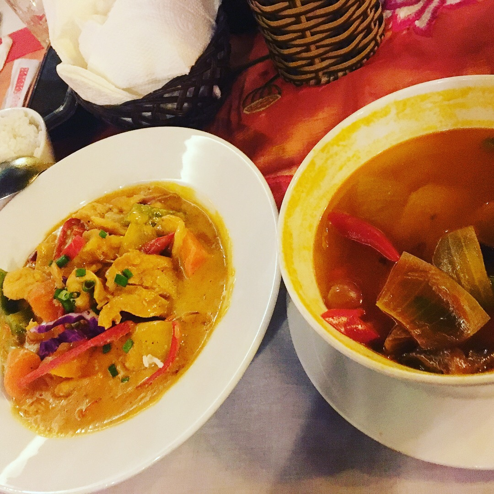
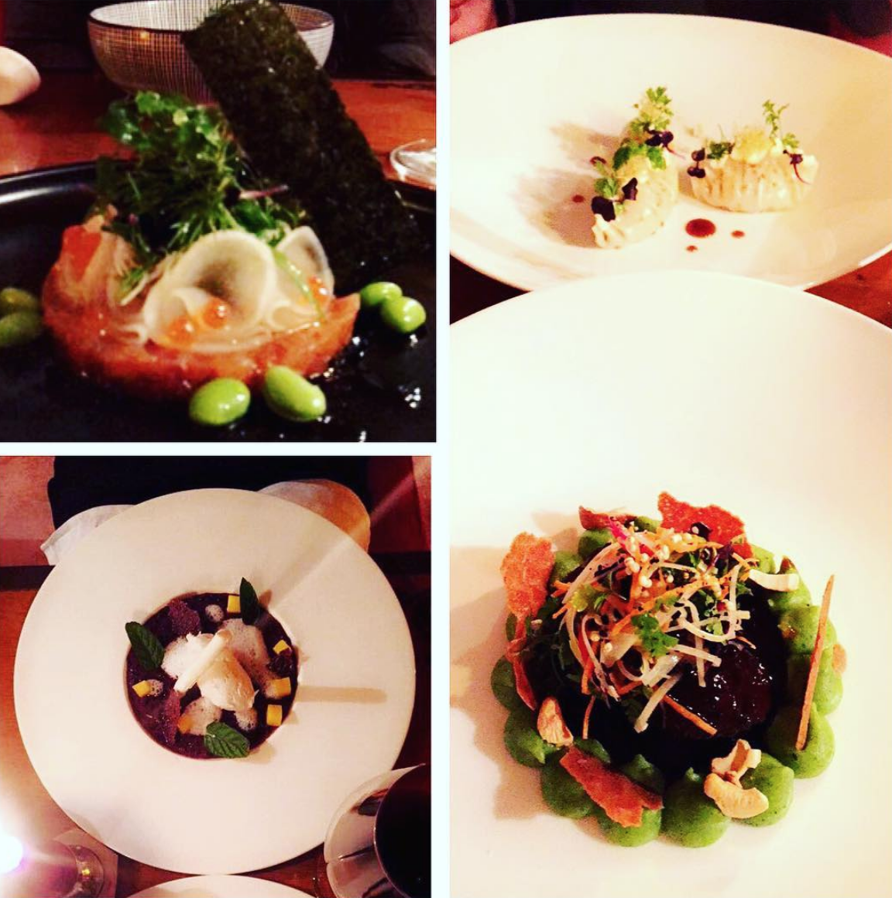

Vietnam: March 2018

This year March, I jetted off on a two week tour in Vietnam! South East Asian cuisine has always been one of my favourites, so it was a no-brainer to bring myself to foodie paradise. First stop was in Hanoi where I tried my first Egg Coffee, in a cute green cafe by the lake after climbing flights and flights of stairs. Fun fact: buildings in Vietnam tend to be narrow and tall as they are taxed by the width of the building! It was really strong coffee topped with a meringue-textured eggy froth, I'm not sure what I think of it yet! Of course, in Vietnam having some Pho was a must, I had it everywhere as I travelled down the country but my favourite was the Pho Ga in Hanoi by far. And honestly, Pho in London will never be the same again! A 4 hour bus journey later, I was in lantern city Hoi An hoping to get some tailored clothes made. Right by the river, there's a tiny restaurant called Nha Hang Xoai that makes the best Chicken Curry I have tasted to date! A pretty sweet curry that's not spicy, exceptional. Just before I flew back to the UK, I spent two days at a home stay in the Mekong Delta, where I also did some catfishing nearby! There were so many amazing dishes I had during my time there, but the standout was the Elephant Fish, it has a great texture and the scales actually add a nice crunch!
~ Kakay
In the capital city, a place to visit to get an introduction into the Vietnamese cuisine is in The Secret Garden. Up five flights of stairs, this speakeasy is lantern-lit. My favourite dishes here are the beef papaya salad, the tomato tofu and the pork and egg. Over in Hanoi, the second largest city, be sure to try the Pho at Pho 10 in the city center. In the third largest city, be sure to find some fresh Banh Xeo down the local streets. These saffron pancakes are filled with fresh prawns and wrapped in vietnamese rice paper and mint before being dipped in a peanut sauce. Venturing further afield, the coconut jelly cakes in Soc Trang and the Nems (Vietnamese fried rolls) or the Chao Ga (slow-cooked chicken with Vietnamese 'porridge') in Hoi An are a must!
~ Nicole
Paris: 2017
For the year of 2017 I lived in the 2nd Arondissement of Paris, where I was able to try some of the best that Paris had to offer. My office was on the Champs Elysee, so finding authentic food at lunch was tough. I went for Cojean almost every day as they change their menu seasonally. Their food is fresh and combines interesting flavours - to me it was a healthier and an honest french version of Pret a Manger here in London. For dinner near the Champs, I ventured behind the back of the main shopping strip to Le Sens Unique - this is one of the very few places in the 8th Arrondissement where French people frequent and enjoy. My favourite item on their menu is the pan fried duck breast with the gratin potatoes (with a glass of rose Sancerre!) My favourite place to eat in Paris is Clown Bar, where the circus used to be. Their squidink sardines are full of flavour and their duck and foie gras pie or the cod with yuozu and pea shoots impressed all of the people that came to visit me whilst I was out there. For a quick bite, my favourite was the Korean Fried Chicken from Wing Wing, the French/Viet fusion Baos at Ha Noi Cafe on Haussmann or the Parisien twist on the hamburger at Roomies~ Nicole
Barcelona: June 2017

For my 24th birthday, my friends kidnapped me and took me to Barcelona. I am so grateful as they planned a weekend full of delicious food! A stand-out for me was at Gatsby, a Great Gatsby themed restaurant that has Caberet performances on in the evening and turns into a bar once the kitchen has closed. For brunch, Brunch and Cake was a winner. With me being allergic to egg, their vegan matcha pancakes made my day! Served with fresh fruit and fresh juices, Brunch and Cake was exactly what I needed before I came home.~ Nicole